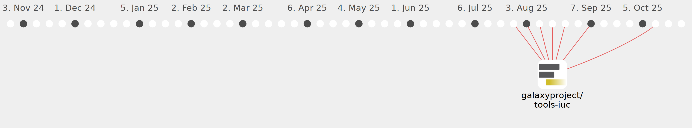

danifranco

Commits all-time: 92
Commits last year: 92

(92)
- 569c66e
- 189f237
- 10d3461
- 2db71a6
- 10b3431
- e5a1685
- a76ae16
- fd71262
- d815b46
- 9ab4c39
- 5946b91
- 3c05116
- eaf1153
- 98e0fd0
- 4634370
- 5847ee2
- be4e387
- bdf88d4
- cbd945f
- 50af07b
- bb91abf
- 65d2aee
- 345f5c7
- d83e92a
- aec81e5
- e7838e8
- 1008e27
- 8946e2e
- 8e717e1
- 817fea1
- 444c5f8
- 12d4ae9
- 0ab10d1
- 1fb9159
- 5f8e84d
- 4338bbb
- 9f73009
- a5734a1
- b5c3d03
- e4584c9
- bd88015
- 7dcb206
- a4d5279
- 28ee108
- c3327cf
- 847ac31
- 83df263
- 115bf78
- 6e002a3
- a642cba
- b7d4676
- 5b1c5c7
- e556679
- a2b54fa
- 2ad97c4
- 561ae8c
- ac5614b
- 9e64f1d
- b94fe9e
- 0a1aa3f
- c915a05
- 705f037
- eb69c72
- c0a5403
- 3aad2aa
- 4cd1348
- 032bc48
- 37e5c91
- 42e1a4a
- 8a1db21
- 6347c4e
- ff1c325
- 8880c7d
- de026a0
- 9e422bf
- 22c15ab
- 7ff914b
- 3e2a62a
- 22231c6
- 7b5e4bb
- afc6475
- 0347f0c
- c004a1d
- c503e89
- 2e6c67a
- 22273ff
- 2ae7475
- c6c0e0f
- 7396631
- 165aa9c
- a3b7005
- ab03958